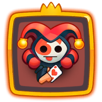
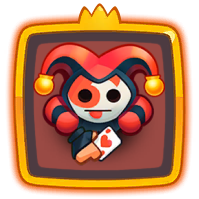
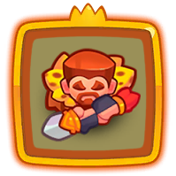
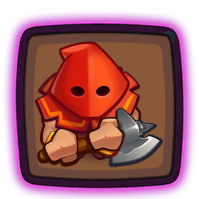
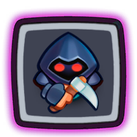

Shaman support teams

When merged, Shaman increases the rank of a random unit on your partner's side of the battlefield.
Your priority should be to merge Mime with Shaman, not Shaman with Shaman or Mime with Summoner for example.
Merging Summoner with another Summoner is fine. Summoner is here mostly to have Shaman available at all times and keep the merges happening.
Here are some of the most popular support teams:
1. The Demonologist is a legendary special unit that when merged, summons a monster to both players' fields, killing the monster gives mana to both players.
If you keep your board full you will have more and better merge options. Make sure you don't overwhelm your partner with too many spawned mobs, I recommend merging Demonologist at the end of the wave, when most or all monsters are dead. Merging Demonologist during a boss is generally not recommended.
 



Other support teams
Here are a few non-Shaman support teams I have seen out there:
1. Trapper periodically throws a net at a random path point. The net temporarily slows down monsters and also increases the damage they take.


2. Demonologist provides mana to both players and Reaper has a chance to instantly kill a normal mob.
